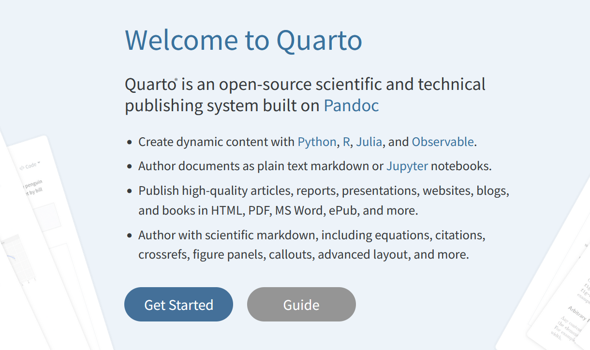
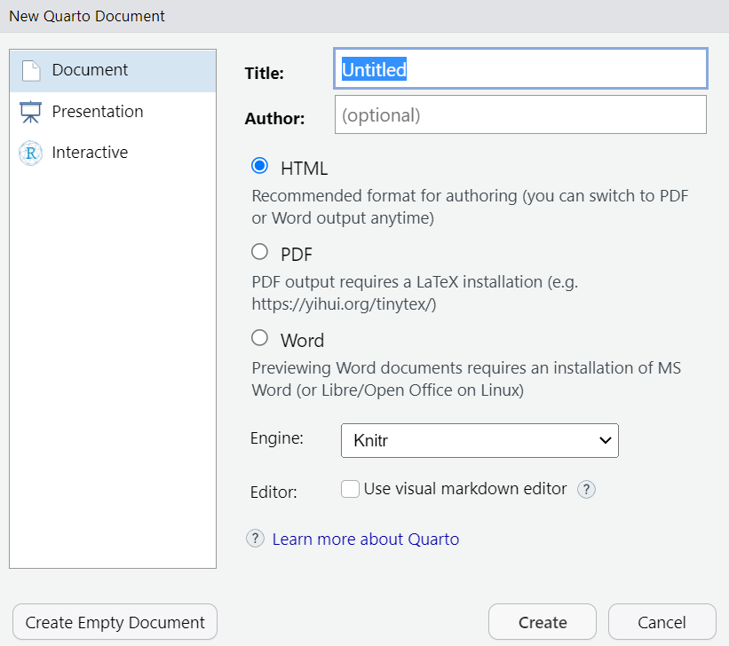
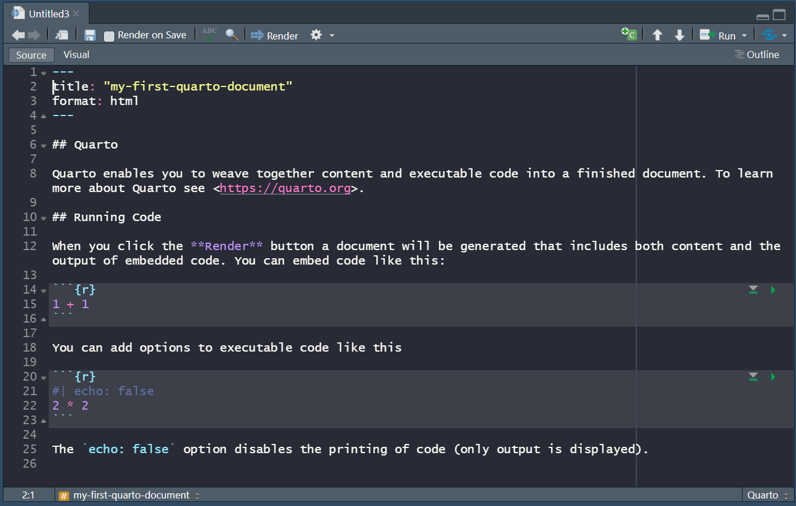
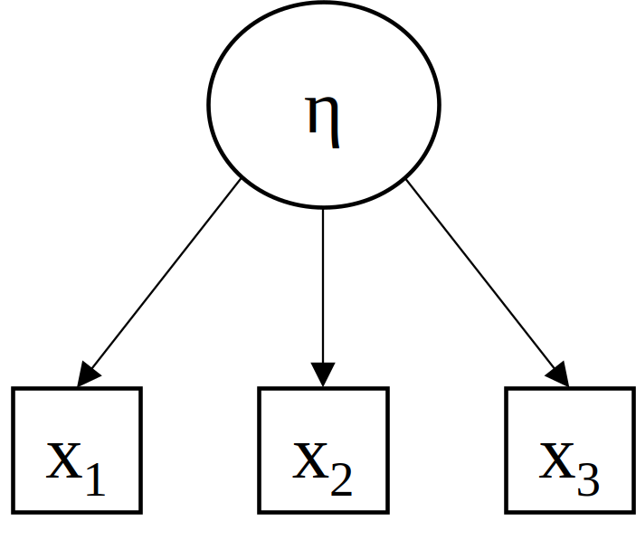
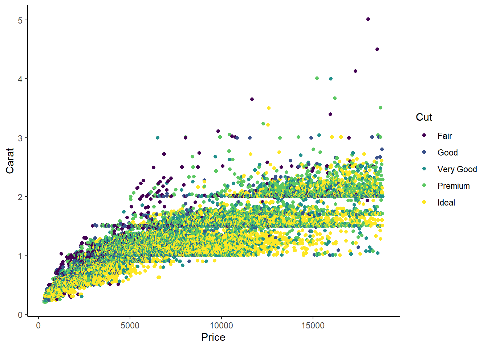

Show/hide code
getwd()This part gives a not so short introduction to Quarto. This introduction is based on the https://quarto.org website. Sometimes the topics are introduced a little bit shorter, sometimes a little bit more information is provided. Most sections provide the hyperlink to the respective sub-website.
If you are familiar with RMarkdown (Allaire et al. 2023) the FAQ for RMarkdown Users might be interesting for you.

But, what is Pandoc? Pandoc is a universal document converter. It converts files from one markup format into another (e.g., markdown → HTML).
In short, with Quarto you can create different types of (reproducible) documents1 including:
HTML
MS Word
Markdown
The focus of this workshop is on HTML (and PDF) documents. For an overview about all formats see here.
File > New File > Quarto Document...

Render button
The YAML3 header is enclosed by three dashes (---):
---
title: "my-first-quarto-document"
format: html
---The basic syntax of YAML uses so-called key-value pairs in the format key: value. This is extremely powerful, because you can generate great documents like this Quarto book without knowing much about HTML, LATEX or programming in general.
Some useful key-value pairs:
subtitle: "my subtitle"
author:
- "John Doe"
- "Jane Roe"
- "Norah Jones"
date: today
toc: true
toc-title: "Inhaltsverzeichnis"
number-sections: truekey: value pairs. Note: There are different YAML options for the formats:
With Quarto it is possible to automatically generate citations and bibliographies in many different ways.
The key: value pair to include citations in Quarto documents is:
bibliography: r-refs.bibHere we use a so-called BibLaTex (.bib) file. These files can be generated with the most reference management software programs4 (e.g., Citavi, EndNote, zotero, …).
It is highly recommended to maintain your retrieved citations. This means, whenever you download a single (!) reference by means of the doi (Digital Object Identifier), check whether the reference information is correct. This saves a lot of time in the long run.
A reference in the .bib-file looks like this:
@Manual{R-base,
title = {R: A Language and Environment for Statistical Computing},
author = {{R Core Team}},
organization = {R Foundation for Statistical Computing},
address = {Vienna, Austria},
year = {2022},
url = {https://www.R-project.org/},
}Quarto document, otherwise you have to provide the path in the bibliography).getwd()R packages in a character vector.pkgList <- c("knitr", # tables
"kableExtra", # tables
"lavaan", # generate data
"car", # recoding
"psych") # descriptivewrite_bib function from the kntir package (Xie 2023).knitr::write_bib(x = pkgList,
file = "r-refs.bib")To change the citation style (e.g., APA, Chicago Manual of Style), we use the csl key5:
csl: apa.cslThe apa.csl file can be found on github.
The citation syntax (How to cite the references in the text?) is briefly explained in the The Body subsection Citation syntax.
There are many different options to customize the output of the (executed code).The options can be specified:
In the following example, we set echo: false and warning: false.
execute:
echo: false
warning: falseThis means that no code and no warnings are shown, except you state it otherwise in a specific code block.
For more (chunk) options see https://quarto.org/docs/computations/execution-options.html.
As explained in the section What is Quarto?:
Quarto is based on Pandoc and uses its variation of markdown as its underlying document syntax (see https://quarto.org)
This means we can use Markdown syntax6 (together with the information in the YAML header) to generate the different types of documents (e.g., HTML, PDF, …).
The information is very dense, so do not expect to remember everything.
There are plenty of different guides to get a quick overview about the language (see e.g., markdownguide, or Quarto-website). The following code snippets are copied and sometimes slightly adjusted from https://quarto.org.
| Markdown Syntax | Output |
|---|---|
|
italics and bold |
|
superscript2 / subscript2 |
|
|
|
verbatim code |
To create headings, add one (or more) # in front of the heading.
| Markdown Syntax | Output |
|---|---|
|
Header 1 |
|
Header 2 |
|
Header 3 |
This goes up to level 6 (i.e., ######) which probably is not recommended to use though.
| Markdown Syntax | Output |
|---|---|
|
|
|
|
More example can be found on https://quarto.org/docs/authoring/markdown-basics.html#lists.
To make a figure, table, equation, …, or section/heading referenceable, it is necessary to provide unique identifier. Identifiers must start with their type (e.g., #fig-, #tbl-, #eq-), except for headers (see in the following example):
When we want to cross-reference the Images section, we have to provide unique identifier that is enclosed by braces {} (here: #include-images) after the heading:
## Images {#include-images} An example on how to reference figures is shown in the Images section.
For more on cross-referencing (e.g., how to make sub-figures) see again https://quarto.org/docs/authoring/cross-references.html.
One way to include images is as follows:
{#fig-myImage}The caption [Here goes the caption] and label {#fig-myImage} make this figure referenceable. To reference it, use the following syntax:
See @fig-myImage for a graphical representation.It renders to:
See Figure 3.1 for a graphical representation.

One of them is the include_graphics function from the knitr package (Xie 2023):
```{r}
#| label: fig-demo-include
#| eval: false
#| code-fold: false
knitr::include_graphics("path-to-file")
```It is referenceable via the label: fig-demo-include. For now ignore the other so-called chunk options (i.e., eval, code-fold). These are explained in the Chunk options section.
For more (e.g., HTML way <img> </img> or <iframe></iframe>) see again https://quarto.org/docs/authoring/figures.html.
Recall a reference in the .bib-file looks like this:
@Manual{R-base,
title = {R: A Language and Environment for Statistical Computing},
author = {{R Core Team}},
organization = {R Foundation for Statistical Computing},
address = {Vienna, Austria},
year = {2022},
url = {https://www.R-project.org/},
}To cite the R program, use @ before the so-called BibLaTex key R-base. Three example follow:
[@R-base] renders as: (R Core Team 2023)
@R-base renders as: R Core Team (2023)
[-@R-base] renders as: (2023)
Multiple citations are separated by semicolons:
[@R-base; @R-knitr] renders as: (R Core Team 2023; Xie 2023)
For more information on the citation syntax see the Pandoc Citations documentation.
Technical writing (e.g., Equations): Use $ delimiters for inline math and $$ delimiters for display math (see https://quarto.org)
Links:
[This is a link to google.de](www.google.de) which appears as This is a link to google.de
<https://quarto.org> which appears as https://quarto.org
Videos
…
Within a Quarto document source code8 can be displayed by using ``` at the start and the end of the code.
The starting ``` are followed by braces around the programming language (e.g., ```{python})
R code is included by using braces around the letter r (i.e., ```{r}; the Windows shortcut is Ctrl+Shift+I)
This looks like this:
```{r}
#| label: fig-example-ggplot
#| fig-cap: "My first ggplot"
#| results: hold
library(ggplot2)
ggplot(data = diamonds,
aes(y = carat, x = price, color = cut)) +
geom_point() +
labs(y = "Carat", x = "Price", color = "Cut") +
theme_classic()
```
R code block.
What are chunk options? Chunk options customize the output of the code blocks. In Quarto it is recommended10 to include the chunk options as special comments (i.e., |#) at the top of the chunk.
In the following example, we set output: false…
```{r}
#| label: my-first-chunk
#| output: false
print("hello world!")
```… and hence, no output is shown.
The most common chunk options are:
| Chunk option | Description | Value |
|---|---|---|
echo |
Include the source code in output | true/false/fenced |
eval |
Evaluate the code chunk. If false the code of the chunk will not be executed, but depending on the echo value be displayed or not. |
true/false |
include |
Include source code &(!) results in the output. | true/false |
results |
Should results be displayed in the output or not (false)? If yes how (markup vs. asis)? |
markup/asis/hold/ hide/false
|
warnings |
Include warnings in output. | true/false |
There are a couple of ways to render a Quarto document:
Clicking the Render Button or using the keyboard shortcut (windows): Ctrl+Shift+K11
Using the terminal
quarto render script.qmd --to htmlquarto render script.qmd --to pdfUsing the quarto_render function from the quarto (Allaire 2022) package
When rendering a Quarto document, the R code chunks are executed (except you stated: eval: false).
Note: It is also possible to generate, presentations (e.g., powerpoint, beamer), websites, books and even interactive components.↩︎
Nevertheless, it (probably) will take some time to get familiar with it↩︎
YAML is an acronym for Yet Another Markup Language see https://en.wikipedia.org/wiki/YAML↩︎
If you do not use one, it is time now.↩︎
CSL is the abbreviation for Citation Style Language (for more see https://en.wikipedia.org/wiki/Citation_Style_Language↩︎
It is also possible to use Latex or HTML syntax. However, you most likely run into problems when rendering into the respective other type.↩︎
Quarto/Pandoc supports displaying (!) many different programming languages (see here)↩︎
see also here: https://yihui.org/knitr/options/↩︎
The rmarkdown syntax is different (e.g., {r my-label, echo = FALSE}), but it also works in Quarto.↩︎
For Mac it is: Cmd+Shift+K↩︎